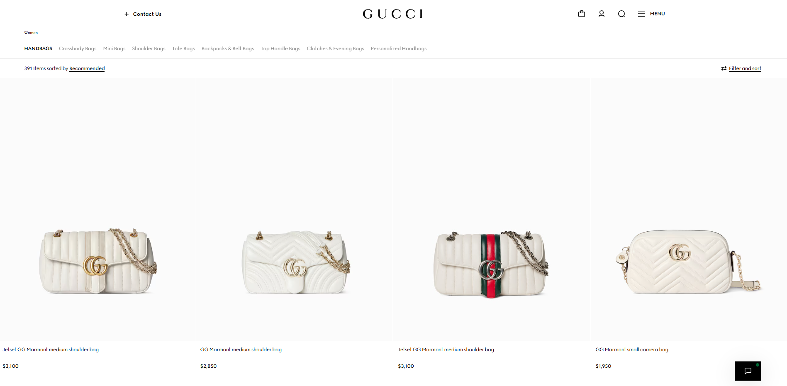

Legitimate Example

A legitimate retailer provides clear product details, transparent pricing, and understandable shipping and return policies. You can independently verify the business and use a recognized checkout process with appropriate payment protections.